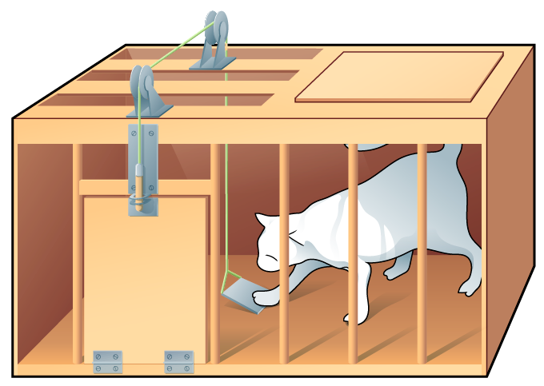
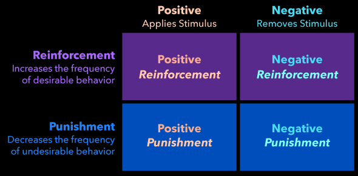
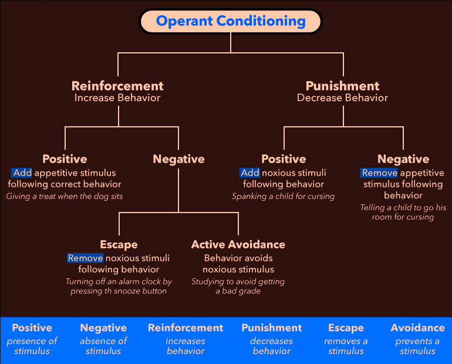
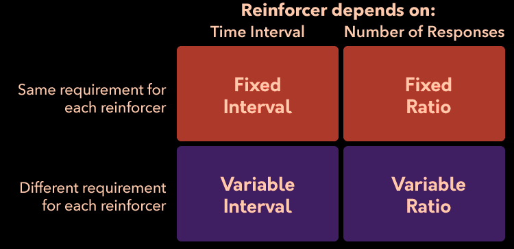
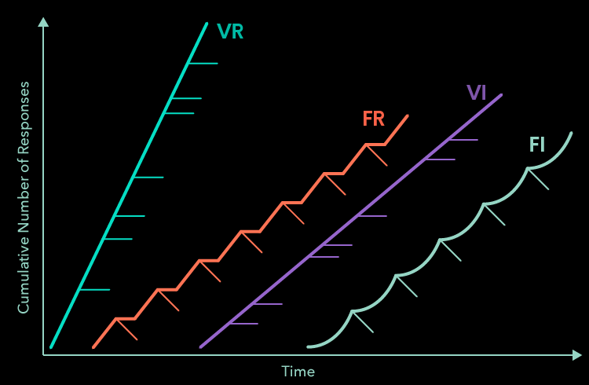
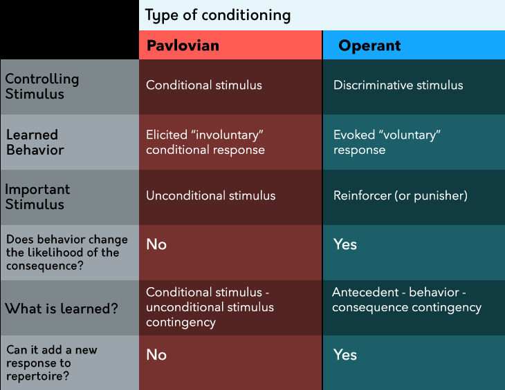

Summary
- There is a difference between learning and innate responses:
Learning is when behavior changes as a result of experience, while
innate responses are inborn
- Reflexes can be learned or innate and can be conditioned to occur in
response to novel situations
- A stimulus can be any measurable and detectable part of the
environment that can produce a response—a behavioral consequence of the
stimulus. Unconditional stimuli and responses are produced without
learning; that is, they are innate. Conditional stimuli, meanwhile, are
signals that predict the occurrence of unconditional stimuli, and
conditional responses are behavioral reflexes that occur in anticipation
of these unconditional stimuli
- Pavlovian conditioning works to change neutral stimuli into
conditional stimuli that predict the occurrence of unconditional stimuli
and produce a conditional response
- The time course of conditioning matters: Excitatory conditioning
occurs for short-delayed, long-delayed, and trace conditioning, while
inhibitory conditioning occurs for simultaneous and backward
conditioning
- Superstitions can often be the result of conditioning
- Taste aversion learning appears to be a special case of Pavlovian
conditioning related to the relationship between the sense of taste and
intestinal distress
- Pavlovian relationships can be unlearned through the process of
extinction, although they can spontaneously recover
- Conditioned inhibition is a kind of Pavlovian conditioning related
to learning about signals related to safety (the absence of an aversive
stimulus)
- Evaluative conditioning helps us relate our positive and negative
experiences to neutral stimuli in the environment and shapes the way we
emotionally feel toward things based on our experiences; advertising
companies often exploit this kind of learning.
- Stimulus generalization and stimulus discrimination are opposites,
with the former helping us generalize what we’ve learned to similar
circumstances and the latter helping us be more discerning about
specific responses
- Higher-order conditioning occurs when neutral stimuli are paired
with conditional stimuli we have already learned and is important for
explaining phenomena such as the effectiveness of spokespeople in
advertisements.
- John B. Watson was an influential figure in the history of
psychology for his views about the extent to which conditioning shapes
children into the people they eventually become as adults; the “Little
Albert” study he and Rosalie Rayner conducted is a strong example of
this
- Systematic desensitization is a therapeutic tool that uses the
principles of Pavlovian conditioning to treat phobic responses
- Operant (instrumental) conditioning is a kind of learning that
explains how we learn about the consequences of our behavior, and
therefore, what to do (and what not to do) in certain circumstances
- E. L. Thorndike is famous for his foundational work on operant
conditioning with cats in puzzle boxes and establishing the law of
effect’s description of the relationship between a situation and the
“stamping in” or “stamping out” of a behavior
- B. F. Skinner is the founder of radical behaviorism, which is a
perspective that treats cognitive and affective processes (thinking and
feeling) like any other physical behavior.
- Skinner’s work on operant conditioning described antecedents as
signals that tell us about when our behavior will (or won’t) produce
certain consequences.
- When consequences are differential, we learn about the relationship
between an antecedent, our behavior, and the consequence more rapidly
than when consequences are non-differential.
- There are four types of contingencies between responses and their
consequences: positive reinforcement, negative reinforcement, positive
punishment, and negative punishment
- Differentiating between these contingencies can be done by asking
first whether a behavior is increased (reinforcement) or decreased
(punishment), then by whether the consequence was added (positive) or
removed (negative) after the behavior
- Escape and avoidance conditioning occur in response to negative
reinforcement
- Positive reinforcement is the preferred operant process because it
has longer-lasting effects on behavior, and it can be used to direct a
person or animal to a “correct” response; punishment should be used as a
last resort because it can lead to a host of negative outcomes
- Operant extinction has three behavioral effects: an extinction
burst, emotional and aggressive responding, and (eventually) the
cessation of responding
- Shaping can be employed to teach a person or animal a new response
by rewarding successive approximations of the desired behavior and can
result in the learning of complex behaviors, such as landmine-sniffing
rats
- Reinforcer tests can determine whether a specific consequence is a
reinforcer or a punisher; they are especially useful for evaluating
secondary reinforcers.
- Consequences can be scheduled in different ways: The requirement for
reinforcement can be fixed or variable and can be based on a number of
responses (ratio schedules) or the amount of time that has passed
between reinforcements (interval schedules)
- Different kinds of consequence schedules produce different rates of
responding and resistance to extinction, with intermittent (variable)
reinforcement being more effective in creating long-term behavioral
change compared to continuous reinforcement
- Pavlovian and operant conditioning often occur simultaneously; the
most important difference is that in Pavlovian conditioning the
unconditional stimulus will occur regardless of our behavior, while in
operant conditioning the consequence is dependent on the production of
the behavior
- Edward C. Tolman first demonstrated latent learning through his
experiments with rats’ learning of cognitive maps; rats learned maze
layouts, but their learning wasn’t demonstrated until they were
motivated to run through the maze
- Albert Bandura demonstrated the process of social learning through
his studies of kindergarten students’ tendency to imitate adults who
modeled “beating up” a toy called a Bobo doll
- Biological constraints exist on learning, such as biological
preparedness to learn specific relationships (such as certain
phobias)
- Learned helplessness can occur when an organism learns that its
behaviors in a situation are pointless or ineffective
Intro
- eugenics: how to artificially breed better human (nazi)
- adult behavior is complex, children are simple, what happened
- learning study started 1900 to 1950, the era of nature
- learning: revenge of nurture
learning: permanent change in behavior not due to
drugs/maturation/injury/disease
- innate skills: we’re born with them, can’t be stopped
- pull hands away from hot objects
- => reflexes: automatic and simple responses, but can be
conditioned
- types of learning
- classical/Pavlovian conditioning
- operant conditioning
- latent learning
- social learning
Pavlovian Conditioning
- stimulus/response are paired (eg wife/husband)
- unconditioned stimulus/response: starting place (hardwired)
- food (UCS) -→ digest (UCR)
- habituation: UCS -→ UCR weakens
- eg background noise
- eg dog with its reflection
init: UCS -→ UCR
conditioning trials: UCS + CS -→ UCR
result:
CS -→ CR(UCR but less intense)
- stimulus: detectable, measurable, can evoke a response
Temporal Conditioning
Methods
- excitatory conditioning: CS presented before the UCS
- short-delayed: CS, short delay, UCS
- long-delayed: CS, long delay, UCS
- trace: CS, a VERY LONG TIME, UCS
- inhibitory: CR is suppressed
- simultaneous: CS+UCS
- backward: UCS, UCR, CS
Taste Aversion Learning
- for new food, trace(HUGE delay) works
- UCS: bacteria
- UCR: sickness
- CS: taste
- CR: nausea
Classical Extinction
present CS without UCS => loss of associative strength
- is not unlearning, if stopped for a while, and then present CS,
spontaneous recovery will happen
Conditioned Inhibition
used in horror films/games
- find safty signals(conditioned inhibitors) to indicate
something will not occur
Evaluative Conditioning
- UCS can be appetitive(pleasant) or
aversive(unpleasant)
- people rather choose the pleasant stimulus (emotional)
- EC changes attitudes without aware that we are learning
- emotional persuasion message
- central route
- motivated audience
- high effort processing (rational)
- lasting change in attitude
- peripheral route (use appetitive CC to associate with positive
emotion)
- not motivated
- low effort (no need to be logical/reasonable)
- temporary change
Other Stimulus Principles
Generelisation
notice similarities between stimulus and respond the same
- assimilating something into a category ### Discrimination >
notices differences between stimulus and respond differently
Higher-Order
already paired CS is paired with a neutral stimulus
Behaviorism
Watson (influenced by Pavlov) states psychology should focus
only on behavior under various stimilus
Little Albert
- shows rat
- shows rat with loud noise
- repeat
Systematic Desensitisation
develops phobias (irrational fear)
Operant Conditioning
operant/instrumental conditioning: the conseq of our behavior
matter
Throndike
cats learned how to get rewards

- instrumental process: -
interacting with some response option has an effect on the env
- law effect:
- we tend to learn something that associates with what we like
- tend to not learn what we don’t like
- behavior that yielded satisfying conseq are more likely to
recur
- result in discomfort => less likely
- conseq
- satisfaction: associate a situation with behavior that
leads to pleasant
- discomfort: leads to unpleasant
Skinner
founded behaivorism
- antecedents: situation that makes it possible for us to
respond/tells us what we might get for that response
- behavior: observable repeatable action
- conseq: outcome of behavior
- differential consequences: do 1 receives good, do 2
don’t
- non-diff conseq: receive the same
- Ogden Lindsley
- dead man test: if a dead man can do it, it’s not a
behavior
Reinforcement
Skinner deved 4 contingencies(if..then..)

- eg PR - turn key, start engine -
check email, receive message - eg NR - leave party, avoid people - turn
off light, avoid electric cost - eg PP - touch metal surface, receive
static shock - answer call, meet scammer - eg NP - drive drunk, lose
license - lie to friend, lose friend
type of NR - escape: something you want to stop is
happenening because of your response, you will respond more - aversive
stimulus present -→ operant response occur -→ stimulus removed - eg - go
to doctor, get medicine (stop sick) - run to building, avoid rain (stop
be wet) - avoiddance: dont want to happen will happen unless
respond, therefore will respond more - warning stimulus present -→
operant response-→ scheduled aversive event cancelled - eg - get
vaccine, avoid potential flu - take umbrella, avoid
potential rain

- punishment alone doesnt teach what to do to get reinforcers
- punishment = aversive stimulus = pain
- person who uses punishment successfully once will use again
- person who got punished leans to use punishment to control
others
- punishment only decrease behavior if applied immediately,
every time, or large aversive
Extinction
conseq previously followed behavior but not now -→ response less
likely to occur
- res prod reinforcer -→ res no longer has effect -→ res
decreases
- behavioral effects
- temporary increase in responding: extinction burst
- emotional/aggressive responding
- stop responding
- partial reinforcement extinction effect
- when extinct, behavior reinforced occasionly lasts longer
without conseq than every time
Shaping
generate new behavior by breaking down a complex response into
smaller steps, and reinforce approx
- typically use a combination of instruction/demostration/shaping to
teach new responses
Reinforcers
event/stimuli that increases res
- reinforcer test(contingency analysis) determine if the
conseq is a reinforcer and increases res freq
- primary(unconditioned): biologically important conseq
- secondary(conditioned) paired with primary reinforcers
Scheduling Conseq
when earn reinforcers


Comparing CC and OC

Cognitive Psychology
Latent Learning
Tolman: learning that happened but hasn’t had an opportunity to be
demonstrated
- rat run maze, develop cognitive map, then always use
shortest path
Social Learning
Bandura: observational learning, understand what to do by
watching others
- phases
- attential: notice model’s behavior, might imitate
the model
- retention: think about performing model’s actions
- production: perform the model’s action
- motivational: imitated behavior produces same reward as the
model -→ will do more